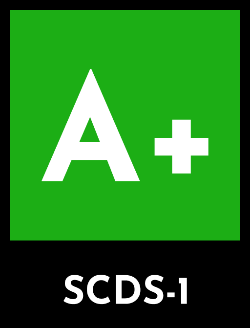

A+
No synthetic content was used.
SCDS describes how much synthetic material was used to make a product.
Take the questionnaire↓SCDS ratings roughly describe how much synthesis was used to make a piece of content, particularly regarding generative AI usage.
The score does not describe the quality of a product.
Read the scoring method →Clients of any product online want to know if AI was used in the creation process, and more importantly, what AI was used for. A SCDS rating is an easy-to-get disclosure for your material that satisfies that need in an easy-to-understand way.
Answer each question to calculate a rating.
You can get a rating determined by answering a handful of simple questions. Each question has different answers that give different points, and the total points in the end determines your final score. Some questions might also determine minimum or maximum ratings, which affect the score bounds.
A conflicting set of answers produces a U rating (undetermined), meaning the questionnaire should be reviewed or retaken. This tool is a disclosure aid, not a certification.